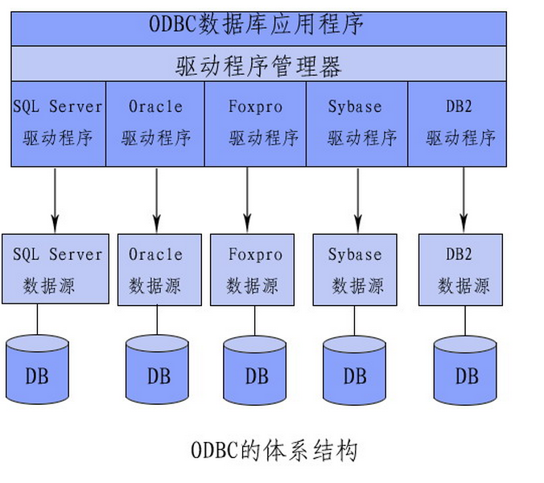
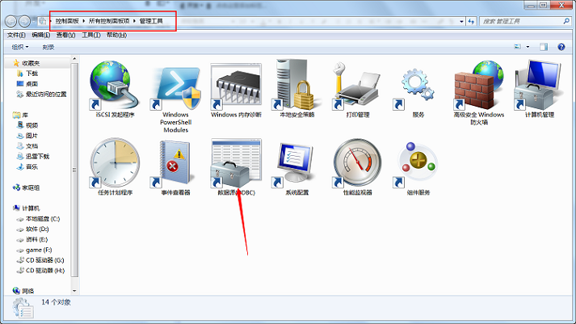
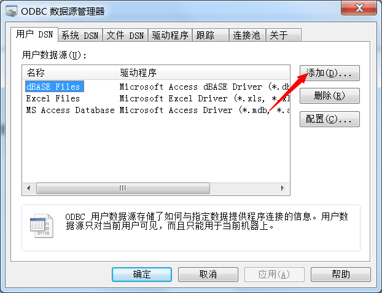
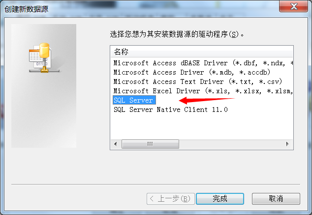
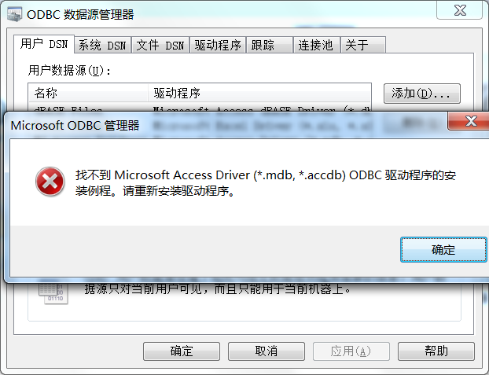
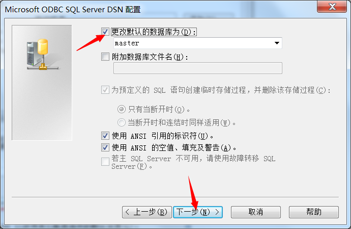
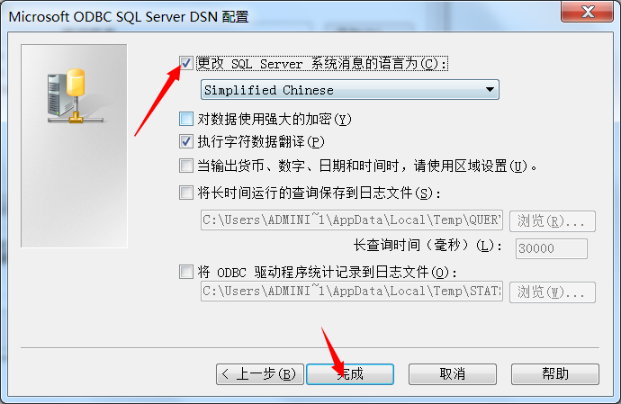
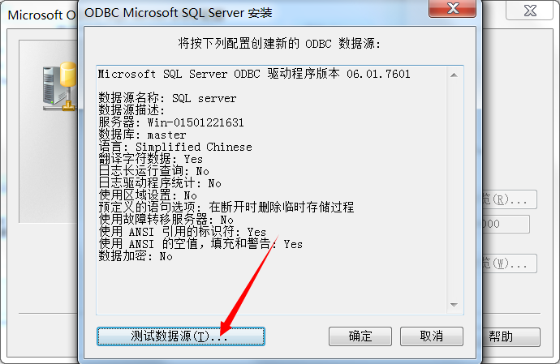
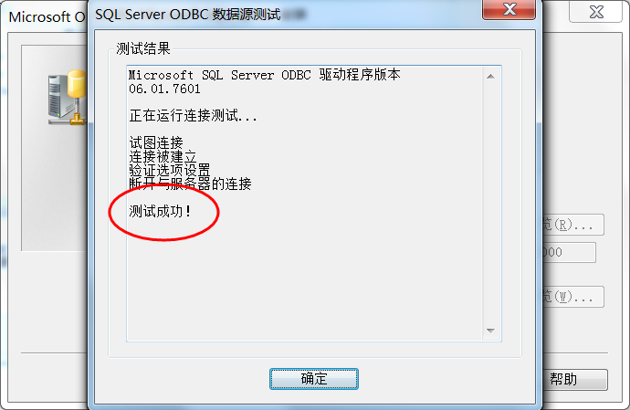

开放数据库互连
开放数据库互连（Open Database Connectivity，ODBC）是微软公司开放服务结构（WOSA，Windows Open Services Architecture）中有关数据库的一个组成部分，它建立了一组规范，并提供了一组对数据库访问的标准API（应用程序编程接口）。
如果你使用SQLserver 建立一个数据库，那么当你的ODBC程序需要连接数据库时从数据源获取数据，当使用这种方式连接数据库时，需要对Windows的ODBC数据源进行配置，现将你的数据库管理软件添加到ODBC，
 点击添加，可以增加数据源
选择你想要添加的数据库管理软件，
如果你的电脑出现如上窗口，

是因为：你的操作系统位数与你想要添加的数据库管理软件的位数不一致所致
例如：win7 64位只能添加access 64bit,
接下来
出现这个原因大概是因为你把登陆ID和password写错了，或者你的SQLserver根本没开，你可以在“开始---服务”里面查看一下
   it is done.
some project path: